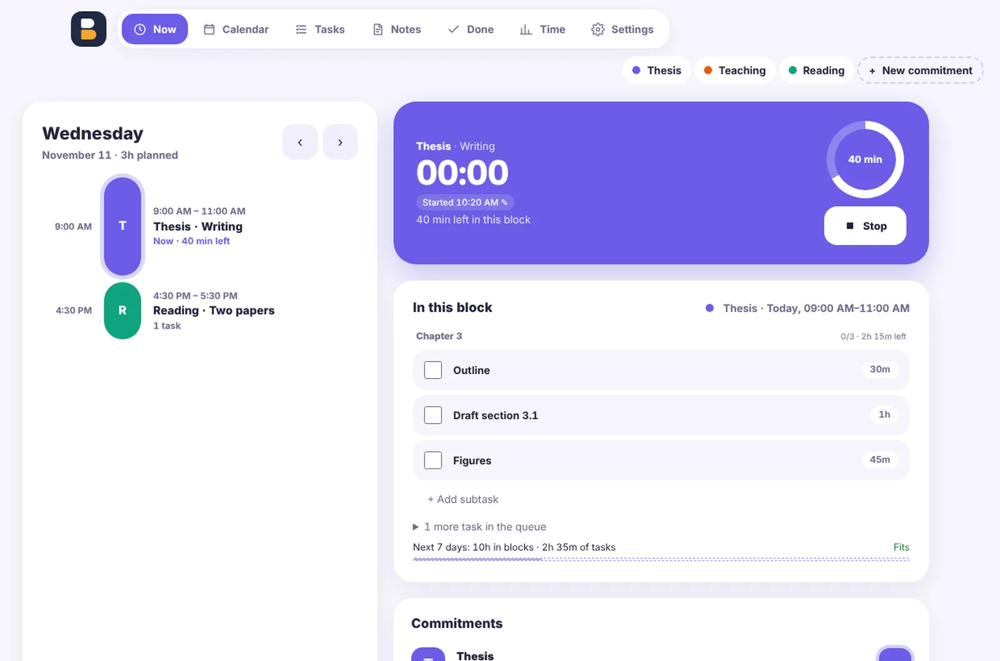
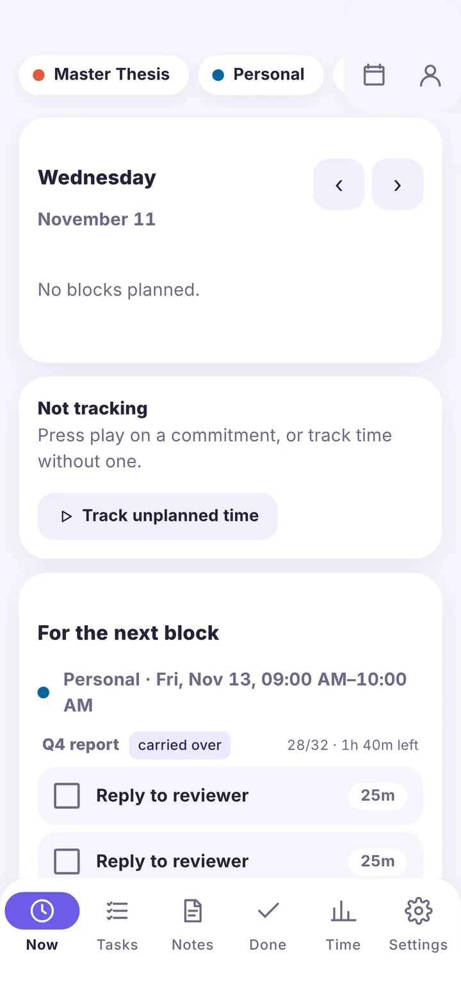
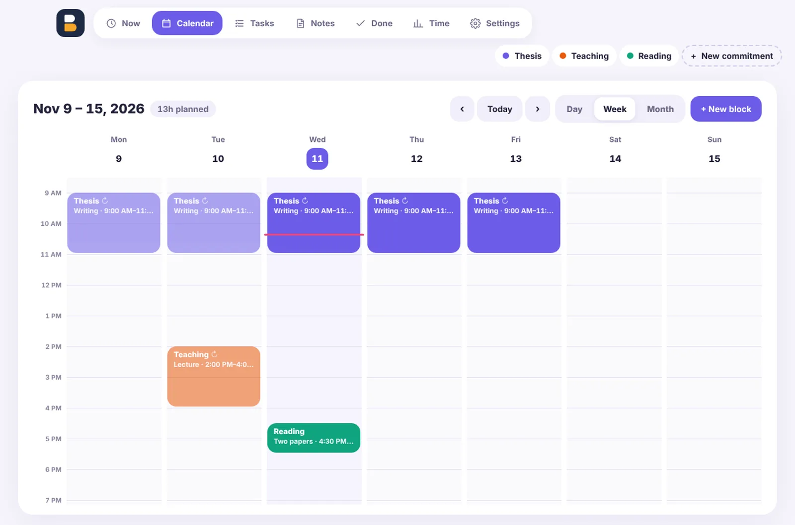

Adesso
Oggi come una timeline, il timer in corso e solo i task di questo blocco.
Dai a ogni impegno blocchi di tempo nel calendario. Blockwise riempie ogni blocco con i prossimi task, registra il tempo con un tocco e ti mostra dove è finita davvero la settimana.
Un planner a blocchi di tempo con timer, per Mac, Android e Nextcloud


Ciò a cui dai tempo: Tesi, Lavoro, Didattica. Ognuno ha il suo colore e il suo calendario.
Ogni evento nel calendario di un impegno è un blocco di tempo per lui. Trascina per pianificarli; ripetili ogni giorno feriale o ogni settimana.
I task fanno la fila per ogni impegno, con sotto-task e stime come "Bozza 45m". Ogni blocco prende i task dall'alto finché è pieno; quello che non finisci passa al blocco successivo.
Registra il tempo con un tocco, sul Mac anche dalla barra dei menu. Ti sei dimenticato di avviarlo? Sposta indietro l'inizio. Fatto e Tempo mostrano la settimana com'è andata davvero.
Giorno, settimana e mese. Trascina per creare, spostare o allungare un blocco; cliccane uno per vedere i task che lo aspettano. Usa il calendario integrato, Calendario di Apple o i calendari di Nextcloud.

Oggi come una timeline, il timer in corso e solo i task di questo blocco.
Ore a settimana per ogni impegno, con l'avanzamento nella pagina Adesso.
Una coda ordinata per ogni impegno. Spunta i sotto-task in ordine; ti avvisa quando i task richiedono più tempo di quello nei blocchi.
Note per ogni impegno in Markdown, con liste da spuntare.
Cicli Pomodoro facoltativi e un promemoria prima della fine di un blocco.
La settimana su una timeline: blocchi pianificati, tempo registrato e ciò che hai spuntato. Ore per impegno, con esportazione CSV.
Nessun account da noi, nessun tracciamento, nessuna pubblicità. Blockwise funziona offline e sincronizza solo dove scegli tu.
Sul tuo server. I blocchi sono eventi in Calendario di Nextcloud; Mac, telefono e web restano sincronizzati.
Su Mac e Android. Sincronizzato tramite il tuo Dropbox o Google Drive, cifrato end-to-end con una passphrase che conosci solo tu.
Sul Mac o sul telefono, senza account e senza sincronizzazione. Puoi collegarne una in seguito e i tuoi dati vengono con te.
Gratis e open source (AGPL-3.0). In italiano e in inglese.
Mac con Apple silicon, macOS 13 o successivo
Scarica per Mac (.dmg)Android 8 o successivo · funziona da solo
Scarica per Android (.apk)Nextcloud da 32 a 35, con l'app Calendario
Scarica l'app per Nextcloud